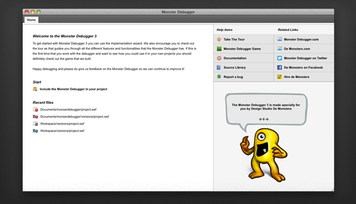

1. Introduction to the Monster Debugger
The MonsterDebugger is a free, open source debugging tool for Adobe Flash, Flex and AIR based applications. It's designed to be useful for both starting and skilled developers and it focuses on five major tasks during the development of your application:
- Tracing messages
- Introspection of your application structure
- Testing methods
- Editing properties
- Finding performance issues
While there are many different debuggers available for Flash developers, we believe the Monster Debugger has a combination of elements that none of the other have to offer. The main advantages above other (commercial) debuggers are:
- It's free and open source, which means that you can now build, debug and publish your Adobe Flash applications with a complete line of open source tools such as the Adobe Flex SDK, Flash Develop and of course the Monster Debugger.
- You can connect to the Monster Debugger even when your application runs on a desktop, webserver or mobile device. There is no need for special debug builds or debug players. We even support a zero configuration mode to connect your mobile device to our debugger over WIFI.
- It supports editing properties and running methods on runtime. This eliminates the need to recompile your application every time you want to edit a value or test a method.
- We have game that shows you how awesome the new debugger is!